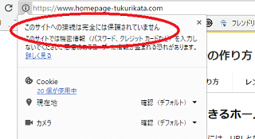
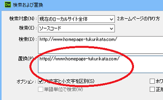
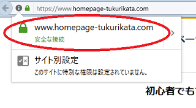
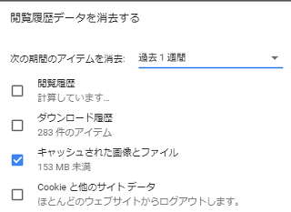
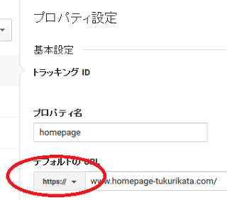
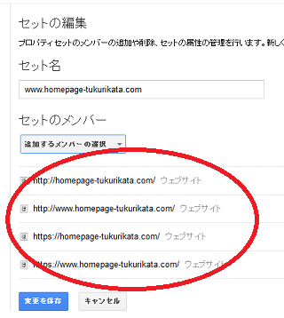

SSL設定後のホームページ修正方法
審査を通過してSSLの設定が完了したのち、「https:のアドレス」にアクセスするとサイトが表示されますが、そのままの状態では「保護されていません」などの表示が出てくるかと思います。

この原因についてですが、ブラウザが画面にサイトを表示する際、HTMLファイルやCSSのほか、画像やフォントなど様々なリソースを読み込んだ上で最終的にサイトが表示されます。
その際、すべてのリソースが「HTTPS」ページから読み込まれる必要がありますが、HTMLファイルやCSSが「HTTPS」に対応していたとしても、画像などのリソースが「HTTP」ページから読み込まれていた場合はエラーが表示されてしまうからです。
このように、サイトのリソースが「HTTPS」と「HTTP」の両方から読み込まれている場合、いわゆる「混合コンテンツ」となり、これらを修正する必要があります。
混合コンテンツの修正方法
混合コンテンツで修正する箇所は「httpsではないページ」から読み込んでいるリソースになりますが、おそらくは<img src="http://"の画像タグがメインになるかと思います。
サイトを表示する際、HTMLファイルだけではなく、スタイルシートや画像なども読み込んでブラウザで表示されますが、画像についても安全なhttpsページから読み込んでいないとエラーが表示されてしまいます。
これは自サイト内の画像のみならず、外部サイトから読み込むアフィリエイトのバナー画像やアクセス解析の「1px」の小さな画像についてもhttpsに対応する必要があります。
また、「自サイトの内部リンク」についてはリソースを読み込んでいるわけではありませんが、こちらについてもそのままの状態だとhttpのページへと遷移してしまうため、内部リンクもすべてhttps:付きに修正する必要があります。
ただし、「他サイトへの外部リンク」については、その他サイトがhttpsに対応していなければリンク切れになってしまうため、こちらはhttpのままで問題ありません。
■https:に修正する箇所
- 読み込んでいる画像などのリソースの箇所（自サイト＋外部サイト）
- リンク（自サイト内の内部リンクのみ、外部リンクはhttpのままで可）
- その他、httpの外部サイトからのプラグインなど
この実際の修正方法については、「http://www.example.com」などのURLを「s付き」の「https://www.example.com」へ一括で置換してしまえば、該当箇所はすべて修正されるはずです。

これはhtmlファイルだけではなく、cssに記載されている画像なども修正する必要があります。
これら、すべて修正したら緑色で安全な接続と表示されるはずです。

修正したものの、なかなか正常に反映されない場合、ブラウザの「キャッシュ」を消去してから再度アクセスしてみるとよいでしょう。

ほか、サイトマップやロボットテキスト、.htaccessなどに記載しているURLについても、全てhttpsへと修正しておくことをおすすめします。
サーチコンソールとグーグルアナリティクスの修正
次に、グーグル関係のツールを修正しておくことをおすすめします。
- サーチコンソール
- Googleアナリティクス
- グーグルアドセンス
このうち、アドセンスについてはドメイン単位での登録になるため、サイトをSSL化しても特に修正の必要はありません。タグについても基本的にはデフォルトでSSL対応しているため、かなり古いコードをそのまま使っているのでなければ、張り替える必要はないです。
もしコードを確認してみて、http://で始まっている古いタグの場合には新しいタグに取り換えるとよいでしょう。
また、アナリティクスについても、単にプロパティの箇所をhttpsに変更するだけなので、タグなどを張り替える必要はありません。

面倒なのはサーチコンソールですが、https:に対応したサイトを別途に追加で登録する必要があります。

当サイトの場合、httpの「wwwあり・なし」で２つ、httpsの「wwwあり・なし」で２つの合計４つを登録しています。ドメインで認証していれば、全て認証されるため、こちらの必要はないかもしれません。また、使用するURLを指定する機能は廃止されたため、単に登録しておくだけで問題ありません。
ただし、「wwwなし」のコモンネームでSSL申請した場合、https:の「wwwあり」でアクセスしても表示されませんので、この場合はサイト登録をすることができず、２つ、もしくは３つになると思います。
そのほか、アフィリエイトを利用している場合もASP側でサイト登録のURLを修正しておき、SSL対応のコードに張り替えておくとよいでしょう。
■サイトシールの貼り付け
こちらは当サイトがもらったシールになりますが、このようなサイトシールがもらえる場合、どこかに貼付しておくとよいかもしれません。
文言については「あなたの個人情報はSSL通信による暗号化で安全に保護されています。」など、安全に配慮している旨の内容を書いておけばよいかと思います。
301リダイレクトと常時SSLの設定
SSLに申し込んだ時点では「http:」と「https:」の両方でアクセス可能な状態のため、これを常にhttps:で表示されるようにして常時SSL化しておくことをおすすめします。
具体的には、httpからhttpsへと301リダイレクトすることになりますが、.htaccessで設定しておくとよいでしょう。
例えば、当サイトの場合は以下のように記述しておりますが、様々な書き方があり、個々のサイトの状況によって違いますのでご注意ください。
■一般的な301リダイレクトの記述例
RewriteEngine on
RewriteCond %{HTTPS} off
RewriteRule ^(.*)$ https://%{HTTP_HOST}%{REQUEST_URI} [R=301,L]ロリポップなどのレンタルサーバーのヘルプページには設定方法が記載されていますが、お使いのサーバー会社のヘルプページなども参照されることをおすすめします。
HSTSを設定する際の注意点
また、強制的にHTTPS接続を使用する「HSTS」（HTTP Strict Transport Security）の設定もありますが、こちらも.htaccessに記述しておくべきと思います。
ただし、当サイト運営者の場合、SSL対応した後にサブドメインが表示されなくなってしまい、このHSTSが原因ではないかといろいろ調べることになりました。
結果的には、このHSTSは関係なかったのですが、なかにはHSTSの「includeSubDomains」の設定が原因で、通常のhttpで運営しているサブドメインまでが強制的にhttpsページへと接続されてしまい、サイトが表示されなくなってしまうケースもあります。
特に、ネット上の「HSTS Preload list」に登録している場合、ブラウザのキャッシュの削除だけではなく、このリストからも削除する必要が出てきてしまうため、かなり時間がかかってしまうケースもあり、途方に暮れているサイト運営者もネット上で見受けられます。
HSTSも設定しておくべきとは思いますが、「サブドメイン」を通常のhttp:にて運営する場合には注意されることをおすすめします。